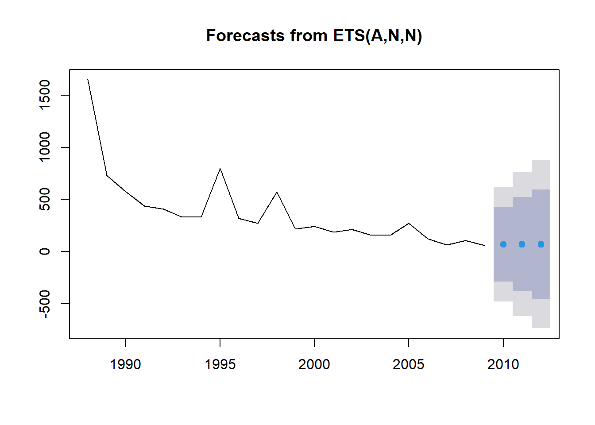
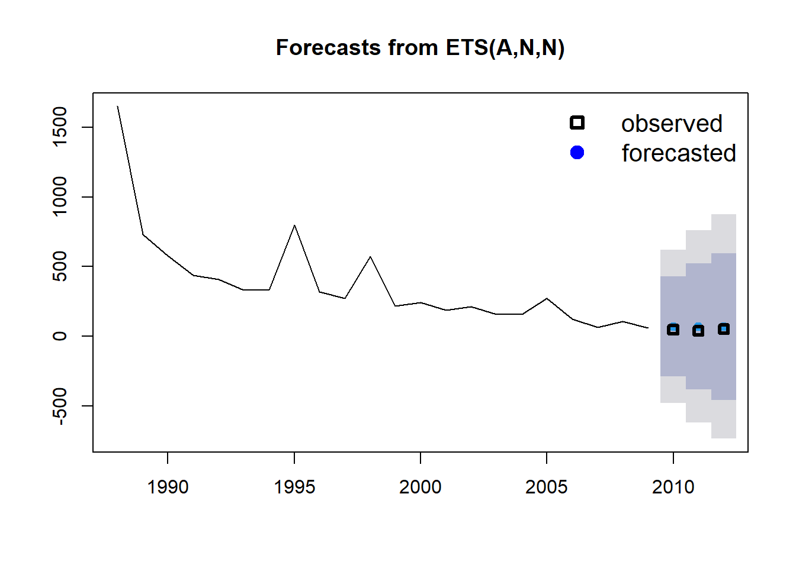
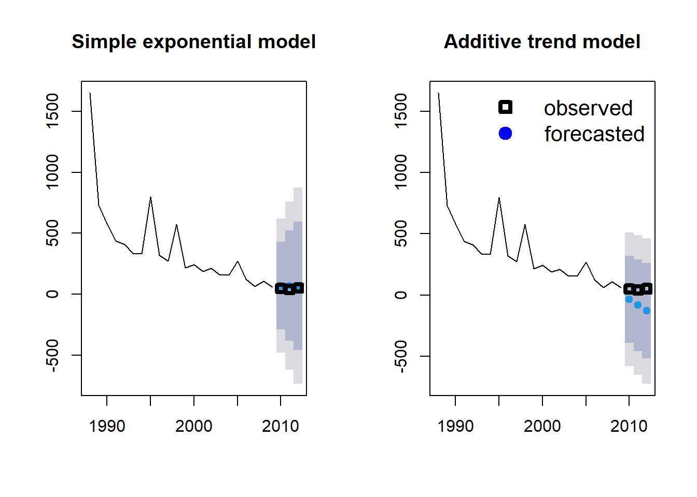
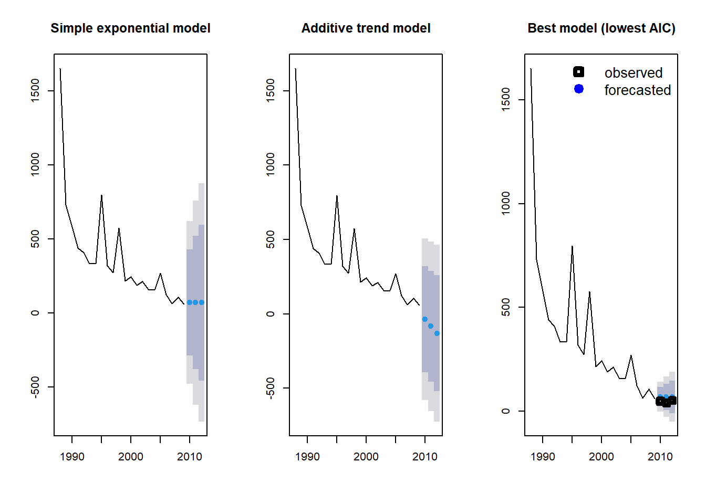
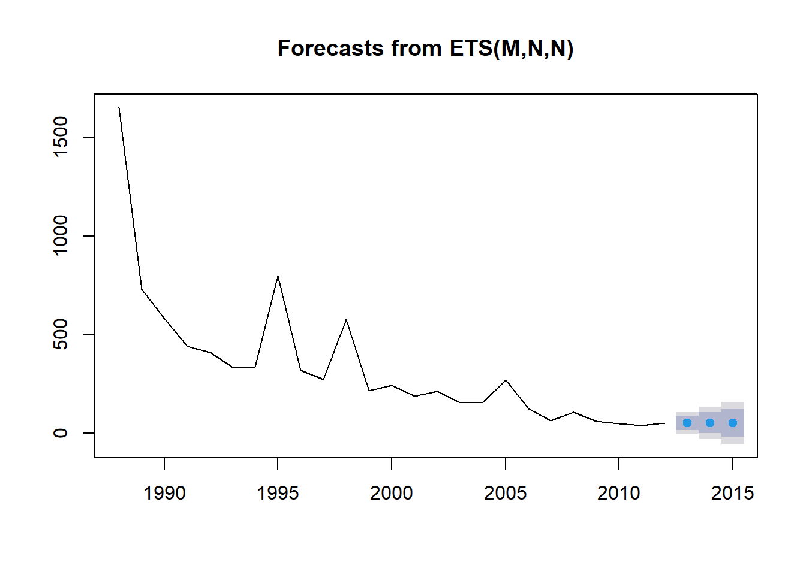
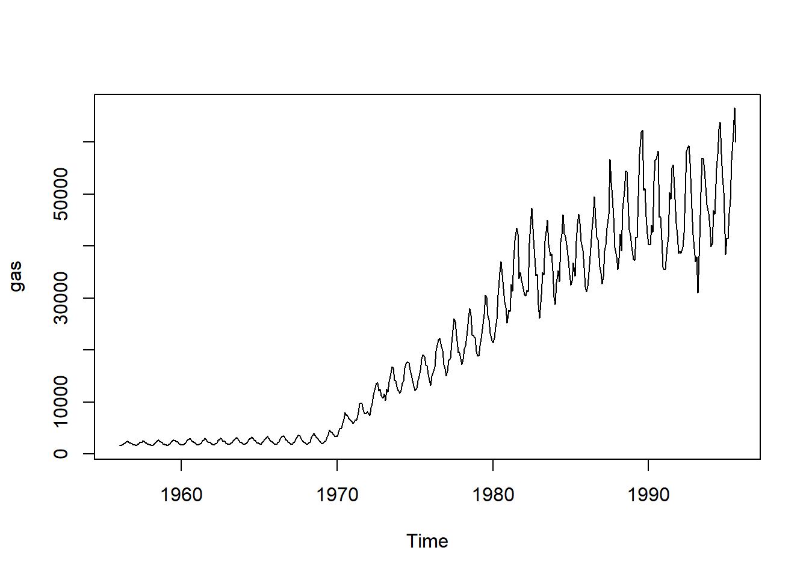
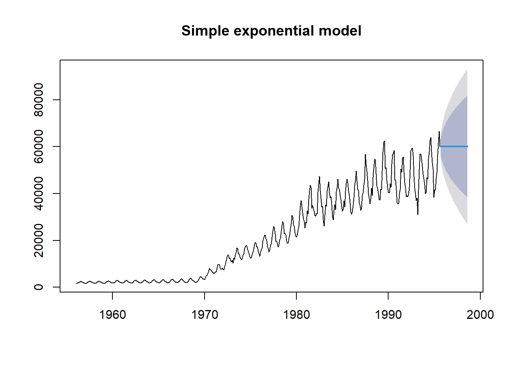
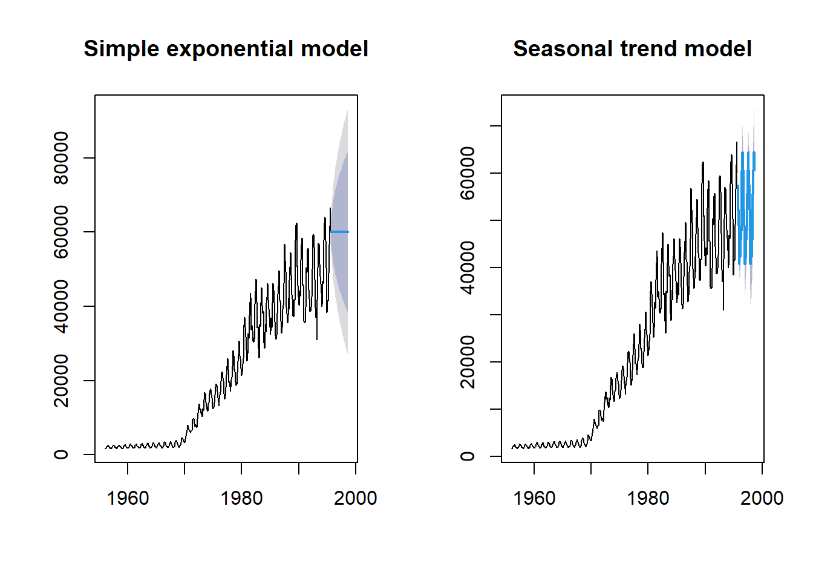
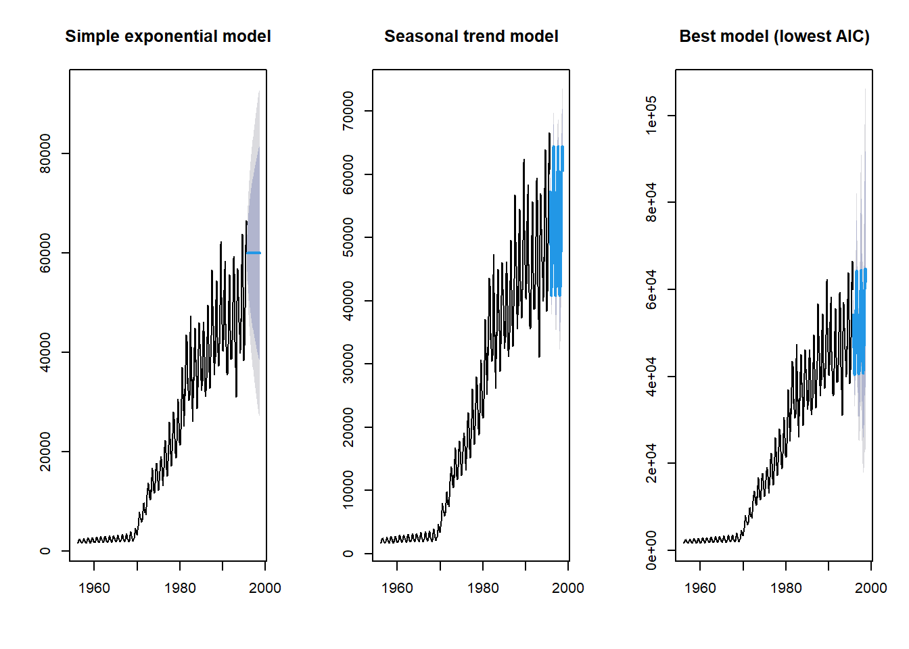

library(forecast)Predicción de series temporales
En las ciencias ambientales, no siempre queremos entender los procesos actuales y pasados, a veces queremos mirar hacia el futuro. Por ejemplo, podemos querer proyectar cuánto tiempo tomará que una especie en peligro de extinción se extinga si las amenazas continúan. También podemos querer proyectar cómo responderán las poblaciones o distribuciones al cambio climático antropogénico en curso. Predecir el futuro, o pronosticar, ha sido el foco de una gran cantidad de investigaciones estadísticas en el campo de la economía y podemos aplicar las mismas técnicas a preguntas ecológicas. Aquí nos enfocaremos en la predicción de series temporales, donde utilizaremos datos históricos recolectados a lo largo del tiempo para predecir las condiciones en el futuro. Utilizaremos el paquete R forecast de Rob Hyndman.
Modelos de suavización exponencial simple

Nuestro primer ejemplo utilizará la pérdida anual de bosque tropical (ha) en la región de Tocantins en la Amazonia brasileña, recolectada mediante imágenes de satélite durante 25 años (datos de Global Forest Watch y analizados en más detalle en Virah-Sawmy et al. 2015).
Introduciremos los datos manualmente.
Area <- c(
1650, 730, 580, 440, 409, 333, 333, 797, 320, 273, 576, 216, 244, 189, 212,
156, 158, 271, 124, 63, 107, 61, 49, 40, 52
)
Year <- c(1988:2012)Primero, utilizamos la función ts para crear un objeto de series temporales en R, especificando los datos, el tiempo de inicio y finalización, y la frecuencia (en este caso, un año).
Area_loss <- ts(Area, start = 1988, end = 2012, frequency = 1)
Area_lossTime Series:
Start = 1988
End = 2012
Frequency = 1
[1] 1650 730 580 440 409 333 333 797 320 273 576 216 244 189 212
[16] 156 158 271 124 63 107 61 49 40 52Luego, podemos dividir los datos en datos de entrenamiento y datos de prueba utilizando la función window. En este ejemplo, trataremos de pronosticar la pérdida de bosque tropical para los últimos tres años de la serie temporal (2010-2012). Estos tres años serán los datos de prueba y los años anteriores serán los datos de entrenamiento. De esta manera, podremos comparar nuestros valores pronosticados con las observaciones reales.
Area_loss_train <- window(Area_loss, start = 1988, end = 2009, frequency = 1)
Area_loss_test <- window(Area_loss, start = 2010, end = 2012, frequency = 1)Ahora que hemos formateado nuestros datos de manera adecuada, ajustaremos un modelo simple de suavizado exponencial utilizando la función ets. Este modelo utiliza un promedio ponderado de observaciones pasadas, donde los pesos disminuyen exponencialmente hacia el pasado. Esto significa que las observaciones más recientes tienen el peso más alto y, por lo tanto, influyen más en las predicciones.
En la función ets, el tipo de modelo se expresa como un código de tres caracteres que representa el tipo de error (primer carácter), el tipo de tendencia (segundo carácter) y el tipo de estacionalidad (tercer carácter). Utilizaremos el tipo de modelo = ANN, que es un modelo simple de suavizado exponencial con errores aditivos (A), sin tendencia asumida (N) y sin estacionalidad (N).
fit1 <- ets(Area_loss_train, model = "ANN")Ahora que hemos ajustado el modelo utilizando nuestros datos de entrenamiento (1988-2009), podemos utilizar el modelo para predecir la pérdida de bosque lluvioso en los últimos 3 años (2010-2012), especificando h como el número de puntos de tiempo que queremos pronosticar (en este caso, 3 años).
fit1_forecast <- forecast(fit1, h = 3)
fit1_forecast Point Forecast Lo 80 Hi 80 Lo 95 Hi 95
2010 70.79069 -287.8400 429.4214 -477.6876 619.2690
2011 70.79069 -379.4406 521.0220 -617.7786 759.3600
2012 70.79069 -455.3275 596.9089 -733.8377 875.4191La salida de nuestra predicción nos proporciona los valores pronosticados (Forecast) para cada año (Punto) y luego los intervalos de confianza del 80% y del 95%. ¿Cómo nos fue? Al utilizar la función plot en un objeto forecast, podemos ver un gráfico de la tendencia histórica (línea), junto con nuestras observaciones pronosticadas (puntos azules) y nuestros intervalos de confianza (95% - sombreado gris, 80% - sombreado azul).
plot(fit1_forecast)
En este caso, ya tenemos datos históricos para nuestros puntos pronosticados, así que los representaremos en el gráfico utilizando la función points (cuadrados negros), seleccionando los últimos tres valores en los vectores de Año y Área (23:25).
plot(fit1_forecast)
points(Year[23:25], Area[23:25], lty = 1, col = "black", lwd = 3, pch = 0)
legend("topright",
legend = c("observed", "forecasted"), lwd = 3,
col = c("black", "blue"), lty = c(0, 0), merge = TRUE,
bty = "n", pch = c(0, 19), cex = 1.3
)
El valor de alfa (el parámetro de suavizado) se estimó en 0.7587, lo que significa un decaimiento relativamente rápido de los pesos de las observaciones hacia el pasado. En otras palabras, las observaciones pasadas tienen una influencia relativamente pequeña en las predicciones futuras.
En nuestro gráfico, observamos una fuerte tendencia descendente, por lo que podríamos agregar una tendencia aditiva en el modelo. Esto se hace simplemente cambiando el segundo carácter en nuestro código de modelo a “A” (aditiva) y repitiendo el proceso.
fit2 <- ets(Area_loss_train, model = "AAN")
fit2_forecast <- forecast(fit2, h = 3)Podemos comparar el modelo exponencial simple con el modelo que incorpora la tendencia aditiva al representarlos lado a lado.
par(mfrow = c(1, 2))
plot(fit1_forecast, main = "Simple exponential model")
points(Year[23:25], Area[23:25], lty = 1, col = "black", lwd = 4, pch = 0)
plot(fit2_forecast, main = "Additive trend model")
points(Year[23:25], Area[23:25], lty = 1, col = "black", lwd = 4, pch = 0)
legend("topright",
legend = c("observed", "forecasted"), lwd = 4,
col = c("black", "blue"), lty = c(0, 0), merge = TRUE,
bty = "n", pch = c(0, 19), cex = 1.3
)
¿Qué modelo crees que funciona mejor? Otra opción es ajustar todos los posibles modelos y seleccionar el mejor modelo utilizando el AIC. Esto se hace simplemente no especificando ninguna estructura de modelo en el comando ets.
fit3 <- ets(Area_loss_train)
fit3_forecast <- forecast(fit3, h = 3)
fit3$method[1] "ETS(M,N,N)"Si estás interesado en qué estructura de modelo se seleccionó, puedes extraerla del objeto del modelo fit_3$method. En este caso, la estructura del modelo fue MNN: un modelo con errores multiplicativos (M), pero sin tendencia general (N) ni estacionalidad (N) asumida. Ahora podemos representar los tres modelos para ver cuál nos brinda la mejor aproximación de nuestras mediciones observadas de pérdida de selva tropical.
par(mfrow = c(1, 3))
plot(fit1_forecast, main = "Simple exponential model")
plot(fit2_forecast, main = "Additive trend model")
plot(fit3_forecast, main = "Best model (lowest AIC)")
points(Year[23:25], Area[23:25], lty = 1, col = "black", lwd = 4, pch = 0)
legend("topright",
legend = c("observed", "forecasted"), lwd = 4,
col = c("black", "blue"), lty = c(0, 0), merge = TRUE,
bty = "n", pch = c(0, 19), cex = 1.3
)
También podemos predecir la pérdida futura de selva tropical (sin datos de prueba). Mantengamos la predicción en tres años pero incluyamos todas nuestras observaciones históricas en los datos de entrenamiento. Nuevamente utilizaremos el método de selección de modelo AIC.
Area_loss_train_2 <- window(Area_loss, start = 1988, end = 2012, frequency = 1)
fit4 <- ets(Area_loss_train_2)
fit4_forecast <- forecast(fit4, h = 3)
par(mfrow = c(1, 1))
plot(fit4_forecast)
¡Malas noticias! El pronóstico es de una disminución del área de selva tropical en la Amazonia.
Modelos que incorporan variabilidad estacional
Probemos otro ejemplo que incorpora no solo tendencias a largo plazo sino también variabilidad estacional. Utilizaremos un ejemplo utilizado en el libro de texto en línea de Rob Hyndman y George Athanasopoulos online textbook e incluido en el paquete forecast: la producción mensual de gas en Australia. Comenzaremos representando los datos históricos desde 1956 hasta 1995. Si representamos los datos, podemos ver dos patrones: una tendencia general positiva y un patrón estacional zigzagueante.
data(gas)
plot(gas)
Si utilizamos nuestro primer modelo, el modelo exponencial simple que no asume una tendencia ni estacionalidad (ANN), obtenemos lo siguiente al predecir los próximos 3 años. Ten en cuenta que h ahora son 36 puntos de tiempo (= 3 años x 12 meses).
fit_gas1 <- ets(gas, model = "ANN")
fit_gas1_forecast <- forecast(fit_gas1, h = 36)
plot(fit_gas1_forecast, main = "Simple exponential model")
Como era de esperar, podemos ver que el modelo no logra predecir correctamente la tendencia general ni la variabilidad estacional. De hecho, el modelo predice una producción constante de gas durante los 3 años (o 36 pasos de tiempo mensuales).
Ahora ajustemos el modelo asumiendo una variabilidad estacional aditiva (ANA).
fit_gas2 <- ets(gas, model = "ANA")
fit_gas2_forecast <- forecast(fit_gas2, h = 36)
par(mfrow = c(1, 2))
plot(fit_gas1_forecast, main = "Simple exponential model")
plot(fit_gas2_forecast, main = "Seasonal trend model")
Este modelo parece mucho más convincente que el ajuste exponencial simple. Por último, permitamos que la función ets elija el mejor modelo utilizando el criterio de información de Akaike (AIC).
fit_gas3 <- ets(gas)
fit_gas3_forecast <- forecast(fit_gas3, h = 36)
par(mfrow = c(1, 3))
plot(fit_gas1_forecast, main = "Simple exponential model")
plot(fit_gas2_forecast, main = "Seasonal trend model")
plot(fit_gas3_forecast, main = "Best model (lowest AIC)")
Más ayuda
Escribe ?forecast para obtener ayuda en R sobre el paquete forecast.
Para obtener más detalles sobre el paquete y pronóstico de series de tiempo en general, consulta el libro en línea de Rob Hyndman y George Athanasopoulos. Este script se basa en la publicación del blog de investigación Ecostats y en el taller del grupo de usuarios de R BEES de Jakub Stoklosa.
Autor: Jakub Stoklosa y Rachel V. Blakey
Año: 2016
Última actualización: Nov. 2023